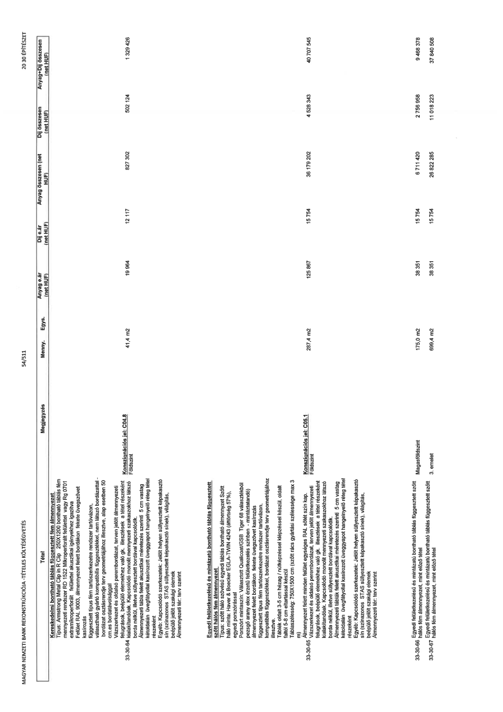

| Tétel | Megjegyzés | Menny. | Egys. | Anyag e.ár (net HUF) | Díj e.ár (net HUF) | Anyag összesen (net HUF) | Díj összesen (net HUF) | Anyag+Díj összesen (net HUF) |
|---|---|---|---|---|---|---|---|---|
| 33-30-64 Kereskedelmi bontható táblás függesztett fém álmennyezet Típus: Armstrong Metal Clip in R Clip 250X1200 bontható táblás fém mennyezeti rendszer RD 1522 Mikroperforált felülettel vagy Rg 0701 extramikroperforált felülettel felülettel akusztikai igényekhez igazítva Felület RAL 9003, álmennyezet felett bordákon fekete üvegszövet kasírozás függesztett típus fém tartószerkezetre rendszer tartóvázon, választható gyártó kompatibilis függesztőkkel, nem látszó bordázattal - bordázat osztásrendje terv geometriájához illesztve, alap esetben 50 cm.es bordatávolsággal Vázszerkezet és oldalsó perembordázat, terven jelölt álmennyezeti felugrások, beépülő elemekhez való gk. illesztések a tétel részeként kialakítandók. Kapcsolódó monolit mennyezeti szakaszokhoz látszó borda nélkül, illetve süllyesztett bordával kapcsolódik. Álmennyezeti tábla felett akusztikai méretezés szerinti 5 cm vastag kétoldalán üvegfátyollal kasírozott üveggyapot hangelnyelő réteg tétel részeként Egyéb: Kapcsolódó szerkezetek: Jelölt helyen süllyesztett képakasztó sín (színazonos STAS süllyesztett képakasztó sínek), világítás, beépülő jelölt szakági elemek Álmennyezeti tér: terv szerint | Konszignációs jel: C04.8 Földszint | 41,4 | m2 | 19 964 | 12 117 | 827 302 | 502 124 | 1 329 426 |
| 33-30-65 Egyedi felületkezelésű és mintázatú bontható táblás függesztett szőtt hálós fém álmennyezet Típus: szőtt háló szövésű egyedi táblás bontható álmennyezet Szőtt háló minta: Haver & Boecker EGLA-TWIN 4243 (áttörtség 57%), egyedi porszórással Porszórt mintaszín: Választott Qualicoat/GSB Tiger 68 választékból pezsgő arany elox érzetű felületkezelés színben - mintázatatandó álmennyezet felett bordákon fekete üvegszövet kasírozás függesztett típus fém tartószerkezetre rendszer tartóvázon, kompatibilis függesztőkkel, bordázat osztásrendje terv geometriájához illesztve. Táblák oldalt 3-5 cm hézag / nülkézéssel képzéssel készül, oldalt faltól 5-8 cm eltartással készül Táblaszélesség: 750X1500 cm (szőtt rács gyártási szélessége max 3 m) Álmennyezet felett minden felület egységes RAL sötét szín kap. Vázszerkezet és oldalsó perembordázat, terven jelölt álmennyezeti felugrások, beépülő elemekhez való gk. illesztések a tétel részeként kialakítandók. Kapcsolódó monolit mennyezeti szakaszokhoz látszó borda nélkül, illetve süllyesztett bordával kapcsolódik. Álmennyezeti táblák felett akusztikai méretezés szerinti 5 cm vastag kétoldalán üvegfátyollal kasírozott üveggyapot hangelnyelő réteg tétel részeként Egyéb: Kapcsolódó szerkezetek: Jelölt helyen süllyesztett képakasztó sín (színazonos STAS süllyesztett képakasztó sínek), világítás, beépülő jelölt szakági elemek Álmennyezeti tér: terv szerint | Konszignációs jel: C05.1 Földszint | 287,4 | m2 | 125 867 | 15 754 | 36 179 202 | 4 528 343 | 40 707 545 |
| 33-30-66 Egyedi felületkezelésű és mintázatú bontható táblás függesztett szőtt hálós fém álmennyezet, mint előző tétel | Magasföldszint | 175,0 | m2 | 38 351 | 15 754 | 6 711 420 | 2 756 958 | 9 468 378 |
| 33-30-67 Egyedi felületkezelésű és mintázatú bontható táblás függesztett szőtt hálós fém álmennyezet, mint előző tétel | 3. emelet | 699,4 | m2 | 38 351 | 15 754 | 26 822 285 | 11 018 223 | 37 840 508 |
